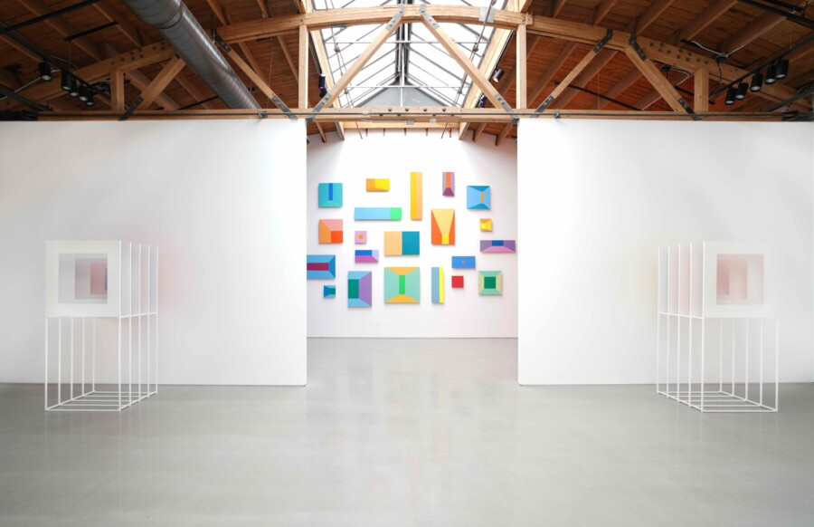

Artist Walkthrough with Luftwerk and Kate Joyce
Join art historian Giovanni Aloi and exhibiting artists Luftwerk and Kate Joyce in a conversational walkthrough of Luftwerk: The Sun Standing Still and concurrent survey exhibition Luminous Matter. Through exploration of the works, the conversation will interrogate the artist’s practice as engaging simultaneously with the built and natural world.
Reception with exhibiting artists to follow. ______________________________________
Luftwerk’s interest lies in the interaction between the natural and built worlds: their current exhibition meditates on the fleeting perception of light and atmosphere, exploring how color, devoid of literal representation, can evoke emotional and sensory responses.
As recently featured in the 2025 Chicago Architectural Biennial, Luftwerk’s practice involves engaging with notable modern and contemporary architecture. Luftwerk has completed site-specific interventions within the works of renowned architects, including Mies van de Rohe (Illinois Institute of Technology, Chicago; German Pavilion, Barcelona; Farnsworth House, Plano), Bruce Goff (Ford Residence, Aurora), and Frank Lloyd Wright (Fallingwater, Mill Run; Robie House, Chicago).
Having photographed architecture throughout her career, Kate Joyce readily recognizes familiar patterns and forms from the built world. In her Space Craft series, featured in the survey exhibition Luminous Matter, Joyce creates “scale-free micro-architectures of light”. Photographing optical prisms pushed to fantastical scale in large black and white prints evokes photography’s compressed relationship to space.
Art historian and curator Giovanni Aloi’s focus lies in the representation of nature and the environment in contemporary art. His recent curatorial project Materialities at the Driehaus Museum uncovers the newfound prominence of materiality in art. He asserts that a growing awareness of the world as the result of compounding collaborative processes with other living and non-living actors.